R BASICS
Latest update - 16 August, 2020
1 GETTING STARTED
1.1 Install R and R Studio
R and R Studio can be installed from the following websites:
While R is stand-alone software, I strongly recommend to use it with R Studio. R Studio has many functions that help your data analysis.
1.2 Basic Setup
1.2.1 Interface

R Studio interface. The left half of the screen is “console” where you put your script to execute calculation/data manipulation/analysis (ignore the tab “Terminal” at this point). The right bottom shows a folder in which you are working now – i.e., “working folder or directory”. R does not recognize any files outside of this folder, so be sure to pick the right directory when you work in R.
1.2.2 Create Project
As you proceed, numerous materials will be generated. How do we manage files? No worries, R Studio will help organize files by creating a project. To initiate the process of creating a project:
- go to
File > New Projecton the top menu - select
New Directory - select
New Project
A new window pops up and prompts you to name a directory and where to put the directory in your computer. Click Browse to select a location for the directory. I would create a folder for R projects (e.g., RProject) and save project directories under this folder. Click Create Project once you decided directory name and location:

1.2.3 Find Where You Are
Once you created a project, R Studio will take you to where the R project is located. Check the current directory using the following script:
getwd()## [1] "C:/Users/Akira/OneDrive - UNCG/Documents/GitHub/aquaecolab"However, when you next open R Studio, the initial location could be somewhere else. In that case, go to File > Open Project and open the .Rproj file that you just created. This will take you to the directory you are supposed to be.
1.3 Object
1.3.1 Create Object
Let’s play with R. Put the following script in your console.
x <- c(10.1, 5.3, 8.8, 6.7, 8.2)This script creates a vector of numbers composed of {10.1, 5.3, 8.8, 6.7, 8.2}. x is a ‘box’ where the vector information is stored, and ‘<-’ is the arrow that commands R to store {10.1, 5.3, 8.8, 6.7, 8.2} in a box x. x is referred to as an object. Let’s see what’s in x:
x## [1] 10.1 5.3 8.8 6.7 8.2R has many functions that calculate the mean, median, etc. Let’s calculate a mean and median for x:
mean(x)## [1] 7.82median(x)## [1] 8.2Also, you can pick an element(s) as you wish. Numbers in brackets [] specifies the numbered ID of each element. In the above example, element x[3] is 8.8. You can extract this information with the following script:
x[3]## [1] 8.8You can also choose multiple elements simultaneously. For example, 3:5 specifies elements starting from 3 to 5 (colon creates a sequence of numbers):
3:5## [1] 3 4 5x[3:5]## [1] 8.8 6.7 8.2If you want to pick elements that are not ordered sequentially, you can use c() to specify multiple elements:
c(1,4)## [1] 1 4x[c(1,4)]## [1] 10.1 6.71.3.2 Case Sensitive
Importantly, objects are case sensitive. Let’s see what happens when you create an object x (lower case):
# create an object `x` (lower case)
x <- 3
# check what's in object `x` (lower)
print(x) ## [1] 3There is a number saved in the object x. Try X (upper case):
print(X)## Error in print(X): object 'X' not foundThis returns a message Error: object 'X' not found. This is because R distinguishes lower and upper cases. To see the difference, create the object X:
# create an object `x` (upper case)
X <- 5
# check what's in object `X` (upper)
print(X) ## [1] 5# check what's in object `x` (lower)
print(x) ## [1] 3Thus, lower x and upper X can save different information.
1.4 Arithmetic Operations
1.4.1 Number
Addition
1 + 1## [1] 2121 + 123## [1] 244Subtraction
1 - 1 ## [1] 0121 - 123## [1] -2Multiplication
1 * 1## [1] 1121 * 123## [1] 14883Division
1 / 1## [1] 1121 / 123## [1] 0.9837398Power
2^2## [1] 4Square root
sqrt(4)## [1] 24^(1/2)## [1] 21.4.2 Object
R can handle arithmetic operations between objects. Prepare objects x and y:
x <- 1:5
y <- 2:6
print(x)## [1] 1 2 3 4 5print(y)## [1] 2 3 4 5 6You can use objects instead of directly entering numbers. R automatically performs arithmetic operations for each element. For example, enter y-x:
y - x## [1] 1 1 1 1 1This is equivalent to:
\[ y[1] - x[1]\\ y[2] - y[2]\\ ...\\ y[n] - x[n] \]
You can save the results as another object:
z <- y - x
print(z)## [1] 1 1 1 1 1
1.5 R Script
In R Studio, we rarely write scripts directly in R console. This is because console does NOT save your scripts, so it is difficult to keep records of data manipulation and analysis. Instead, we write our scripts in an R script, which enables you save and organize scripts in a separate window and allows you to run scripts when you are ready.
1.5.1 Create R Script
To create an R script:
- go to
File > New File > R Script(orCtrl + Shift + N) - then, you will see a new window of R script in the left top

1.5.2 Run R Script
You can run your script from the R script window. Write the following scripts:
x <- c(10.1, 5.3, 8.8, 6.7, 8.2)
mean(x)Once you write scripts in the R Script window, the tab text will turn into red. This means this R Script file is edited but unsaved. You can save the file by Ctrl + s or by clicking the floppy disk icon on the top bar. Writing these scripts in the R script window does not execute any calculation. To execute, select lines and Ctrl + Enter. Selected scripts will appear in the console and execute what you commanded:

1.6 Compile Report
R Studio has a function to compile a report from R scripts (see also R Markdown: The Definitive Guide for details). Include the following script on the top of the R script file to put your information:
#' ---
#' title: "Report"
#' author: Your Name
#' date: Jan 16, 2020
#' output: html_document
#' ---Each argument determines the following:
titletitle of your reportauthorthis appears below the title in the compiled reportdatedate createdoutputoutput format; usehtml_document
Click on the “compile” button on the top. This creates a report from your R script:

The R Studio will start compiling your report. Here is some rules when compiling a report.
- Your script will appear in a grey box. Put
#if you want leave a comment on the script. - Output from your script will appear in a white box with double sharps
- Text after
#'will show up outside a grey box (text after#will be regarded as Header)
For example, the following script is compiled like this:
#' ---
#' title: "Report"
#' author: Your Name
#' date: Jan 16, 2020
#' output: html_document
#' ---
#' # Header 1.1
#' ## Header 1.2
#' ### Header 1.3
#' This appears outside boxes
# inbox comment here
x <- c(1, 2, 3, 4)
x
#' # Header 2.1
#' ## Header 2.2
#' ### Header 2.3
#' This text can be used to guide readers
# inbox comment here
y <- 1:9
y
1.7 File Management
As you proceed, the number of files will increase. It is critical to learn basic rules of how to locate and name your files in your computer. Here are some recommendations:
- Put all the relevant files in a single folder.
- R scripts and associated files should be saved in the project folder.
- Create a new R project when working on different topics. Do not mix them up in a single folder.
- Avoid space and period when naming files. Instead, use underscore or hyphen.
- Do:
script_week1.Rscript-week1.R - Don’t:
script week1.R
- Do:
- Use lowercase.
- Do:
script_week1.R - Don’t:
Script_week1.R
- Do:
- Keep consistent.
- For example, if your R script deals with figures, then name it
figure_XXX.R(XXXidentifies further details).
- For example, if your R script deals with figures, then name it
- Numbering will help keep your folder/directory organized.
figure_temperature.R,figure_precipitation.R…this will work, but the order of files may be confusing.figure01_temperature.R,figure02_precipitation.R…this will order files by group (figure) and then numerically.
2 DATA STRUCTURE
2.1 Overview
R has 6 basic data types.
- character:
"aquatic","ecology"(no order) - factor: similar to character, but has levels (alphabetically ordered by default)
- numeric:
20.0,15.5 - integer:
3,7 - logical:
TRUE,FALSE - complex:
1+2i(complex numbers with real and imaginary parts)
These elements form one of the following data structures.
- vector: a series of elements. A single data type is allowed in a single vector
- matrix: elements organized into rows and columns. A single data type is allowed in a single matrix
- data frame: looks similar to a matrix, but allows different data types in different columns
2.2 Vector
2.2.1 Create Vector
Below are examples of atomic character vectors, numeric vectors, integer vectors, etc. There are many ways to create vector data. The following examples use c(), :, seq(), rep():
#ex.1a manually create a vector using c()
x <- c(1,3,4,8)
x## [1] 1 3 4 8#ex.1b character
x <- c("a", "b", "c")
x## [1] "a" "b" "c"#ex.1c logical
x <- c(TRUE, FALSE, FALSE)
x## [1] TRUE FALSE FALSE#ex.2 sequence of numbers
x <- 1:5
x## [1] 1 2 3 4 5#ex.3a replicate same numbers or characters
x <- rep(2, 5) # replicate 2 five times
x## [1] 2 2 2 2 2#ex.3b replicate same numbers or characters
x <- rep("a", 5) # replicate "a" five times
x## [1] "a" "a" "a" "a" "a"#ex.4a use seq() function
x <- seq(1, 5, by = 1)
x## [1] 1 2 3 4 5#ex.4b use seq() function
x <- seq(1, 5, by = 0.1)
x## [1] 1.0 1.1 1.2 1.3 1.4 1.5 1.6 1.7 1.8 1.9 2.0 2.1 2.2 2.3 2.4 2.5 2.6 2.7 2.8
## [20] 2.9 3.0 3.1 3.2 3.3 3.4 3.5 3.6 3.7 3.8 3.9 4.0 4.1 4.2 4.3 4.4 4.5 4.6 4.7
## [39] 4.8 4.9 5.02.2.2 Check Features
R provides many functions to examine features of vectors and other objects, for example:
class()- what kind of object (data structure) is it (high-level)?typeof()- what is the object’s data type (low-level)?attributes()- does it have any metadata?length()- how long is it? What about two dimensional objects?sum()- what is the summed number of the data?mean()- what is the average number of the data?
Numeric Vector
x <- c(1.2, 3.1, 4.0, 8.2)
x## [1] 1.2 3.1 4.0 8.2class(x)## [1] "numeric"typeof(x)## [1] "double"length(x)## [1] 4sum(x)## [1] 16.5mean(x)## [1] 4.125Character Vector
y <- c("a", "b", "c")
class(y)## [1] "character"length(y)## [1] 32.2.3 Access
Element ID
Use brackets [] when accessing specific elements in an object. For example, if you want to access element #2 in the vector x, you may specify as x[2]:
x <- c(2,2,3,2,5)
x[2] # access element #2## [1] 2x[c(2,4)] # access elements #2 and 4## [1] 2 2x[2:4] # access elements #2-4## [1] 2 3 2Equation
R provides many ways to access elements that suffice specific conditions. You can use mathematical symbols to specify what you need, for example:
==equal>larger than>=equal & larger than<smaller than<=equal & smaller thanwhich()a function that returns element # that suffices the specified condition
The following examples return a logical vector indicating whether each element in x suffices the specified condition:
# creating a vector
x <- c(2,2,3,2,5)
# ex.1a equal
x == 2## [1] TRUE TRUE FALSE TRUE FALSE# ex.1b larger than
x > 2 ## [1] FALSE FALSE TRUE FALSE TRUEYou can access elements that suffice the specified condition using brackets, for example:
# ex.2a equal
x[x == 2]## [1] 2 2 2# ex.2b larger than
x[x > 2]## [1] 3 5Using which(), you can see which elements (i.e., #) matches what you need:
# ex.3a equal
which(x == 2) # returns which elements are equal to 2## [1] 1 2 4# ex.3b larger than
which(x > 2)## [1] 3 5
2.3 Matrix
2.3.1 Create Matrix
Matrix is a set of elements (single data type) that are organized into rows and columns:
#ex.1 cbind: combine objects by column
x <- cbind(c(1,2,3), c(4,5,6))
x## [,1] [,2]
## [1,] 1 4
## [2,] 2 5
## [3,] 3 6#ex.2 rbind: combine objects by row
x <- rbind(c(1,2,3), c(4,5,6))
x## [,1] [,2] [,3]
## [1,] 1 2 3
## [2,] 4 5 6#ex.3 matrix: specify elements and the number of rows (nrow) and columns (ncol)
x <- matrix(1:9, nrow = 3, ncol = 3)
x## [,1] [,2] [,3]
## [1,] 1 4 7
## [2,] 2 5 8
## [3,] 3 6 92.3.2 Check Features
R provides many functions to examine features of matrix data, for example:
class()what kind of object (data type) is it (high-level)?typeof()what is the object’s data type (low-level)?attributes()does it have any metadata?dim()how long are rows and columns?rowSums()what is the summed number of the data for each row?colSums()what is the summed number of the data for each column?
Integer Matrix
x <- matrix(1:9, nrow = 3, ncol = 3)
x## [,1] [,2] [,3]
## [1,] 1 4 7
## [2,] 2 5 8
## [3,] 3 6 9class(x)## [1] "matrix" "array"typeof(x)## [1] "integer"dim(x)## [1] 3 3Character Matrix
y <- matrix(c("a","b", "c", "d", "e", "f"), nrow = 3, ncol = 2)
y## [,1] [,2]
## [1,] "a" "d"
## [2,] "b" "e"
## [3,] "c" "f"class(y)## [1] "matrix" "array"typeof(y)## [1] "character"dim(y)## [1] 3 22.3.3 Access
When accessing matrix elements, you need to pick row(s) and/or column(s), for example:
x <- matrix(1:9, nrow = 3, ncol = 3)
x## [,1] [,2] [,3]
## [1,] 1 4 7
## [2,] 2 5 8
## [3,] 3 6 9x[2,3] # access an element in row #2 and colum #3## [1] 8x[2,] # access elements in row #2## [1] 2 5 8x[c(2,3),] # access elements in rows #2 and 3## [,1] [,2] [,3]
## [1,] 2 5 8
## [2,] 3 6 9x[,c(2,3)] # access elements in columns #2 and 3## [,1] [,2]
## [1,] 4 7
## [2,] 5 8
## [3,] 6 9You can assess each element with mathematical expressions just like vectors:
x == 2 # equal## [,1] [,2] [,3]
## [1,] FALSE FALSE FALSE
## [2,] TRUE FALSE FALSE
## [3,] FALSE FALSE FALSEx > 2 # larger than## [,1] [,2] [,3]
## [1,] FALSE TRUE TRUE
## [2,] FALSE TRUE TRUE
## [3,] TRUE TRUE TRUEHowever, care must be taken when accessing elements, as it will be automatically converted to vector data:
x[x == 2] # equal## [1] 2x[x > 2] # larger than## [1] 3 4 5 6 7 8 9which() needs an additional argument to return both row and column #:
which(x == 2, arr.ind = TRUE)## row col
## [1,] 2 1which(x > 2, arr.ind = TRUE)## row col
## [1,] 3 1
## [2,] 1 2
## [3,] 2 2
## [4,] 3 2
## [5,] 1 3
## [6,] 2 3
## [7,] 3 3
2.4 Data Frame
Data frame is a set of elements that are organized into rows and columns, but differ from matrix in several ways.
- it allows multiple data types in different columns
- each column has its name
- you can access columns by name (using
$)
Data frame is the most common data structure when manipulating ecological data. A data set loaded from a spread sheet (we will address this later) will be automatically recognized as a data frame. Here is an example:
Create a data frame
In the following example, variables x and y are organized into a single data frame dat. Variable are renamed when creating a data frame composed of x and y.
# Create data frame
x <- c("Pristine", "Pristine", "Disturbed", "Disturbed", "Pristine") # Lake type
y <- c(1.2, 2.2, 10.9, 50.0, 3.0) # TSS: total suspended solids (mg/L)
dat <- data.frame(LakeType = x, TSS = y) # x is named as "LakeType" while y is named as "TSS"
datCall column names
colnames(dat) # call column names## [1] "LakeType" "TSS"Access by columns
dat$LakeType # access LakeType## [1] "Pristine" "Pristine" "Disturbed" "Disturbed" "Pristine"dat$TSS # access TSS## [1] 1.2 2.2 10.9 50.0 3.0You can access elements like a matrix as well:
dat[,1] # access column #1## [1] "Pristine" "Pristine" "Disturbed" "Disturbed" "Pristine"dat[1,] # access row #1dat[c(2,4),] # access row #2 and 4
2.5 Exercise
Download a template (R script file).
2.5.1 Vector
- Create three numeric vectors with length 3, 6 and 20, respectively. Each vector must be created using different functions in R.
- Create three character vectors with length 3, 6 and 20, respectively. Each vector must be created using different functions in R.
- Copy the following script to your R script and perform the following analysis:
- Identify element IDs of
xthat are greater than2.0 - Identify element values of
xthat are greater than2.0
set.seed(1)
x <- rnorm(100)2.5.2 Matrix
- Create a numeric matrix with 4 rows and 4 columns. Each column must contain identical elements.
- Create a numeric matrix with 4 rows and 4 columns. Each row must contain identical elements.
- Create a character matrix with 4 rows and 4 columns. Each column must contain identical elements.
- Create a character matrix with 4 rows and 4 columns. Each row must contain identical elements.
- Copy the following script to your R script and perform the following analysis:
- Identify element IDs of
xthat are greater than2.0(specify row and column IDs) - Identify element values of
xthat are greater than2.0and calculate the mean.
set.seed(1)
x <- matrix(rnorm(100), nrow = 10, ncol = 10)2.5.3 Data Frame
- Create a data frame of 3 variables with 10 elements (name variables as
x,yandz.xmust becharacterwhileyandzmust benumeric. - Check the data structure (higher-level) of
x,yandz - Copy the following script to your R script and perform the following analysis:
- Calculate the means of
temperatureandabundancefor statesVAandNCseparately - usetapply()function
set.seed(1)
x <- rnorm(100, mean = 10, sd = 3)
y <- rpois(100, lambda = 10)
z <- rep(c("VA", "NC"), 50)
dat <- data.frame(temperature = x, abundance = y, state = z)
3 VISUALIZATION
3.1 Overview
R has a number of functions that help visualize data. graphics provides R functions for base graphics (list of functions). I will use iris, the built-in data set in R, to show how graphics functions work.
iris
3.2 plot()
When plotting data, what’s you need is to specify the formula. For example, if you want to visualize the relationship between x and y (y on the vertical axis and x on the horizontal axis), the formula would be y ~ x (the left side of the formula will be on the vertical axis). In the iris data set, the following columns are available: Sepal.Length Sepal.Width Petal.Length Petal.Width Species. In the following example, the relationship between Sepal.Length and Sepal.Width is plotted:
plot(Sepal.Length ~ Sepal.Width, data = iris)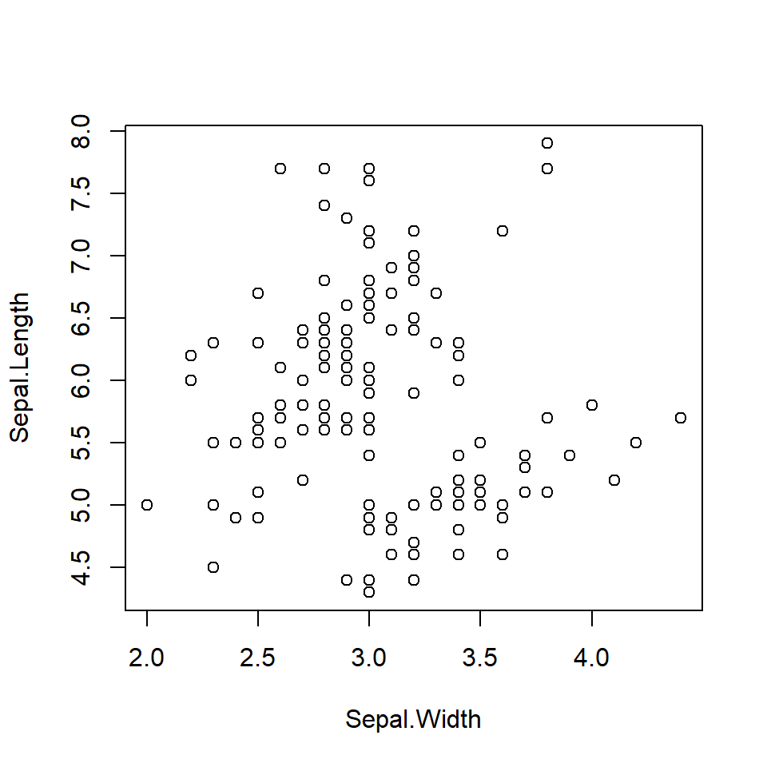
The argument data = tells the function the data set from which the variables (Sepal.Length and Sepal.Width) are extracted. The above figure is the default setting, and you may customize it as necessary. Below is an example of how you may customize:
3.2.1 Symbol
pch argument. Choose from 1 to 25 (google r plot pch for details)
plot(Sepal.Length ~ Sepal.Width, data = iris,
pch = 19)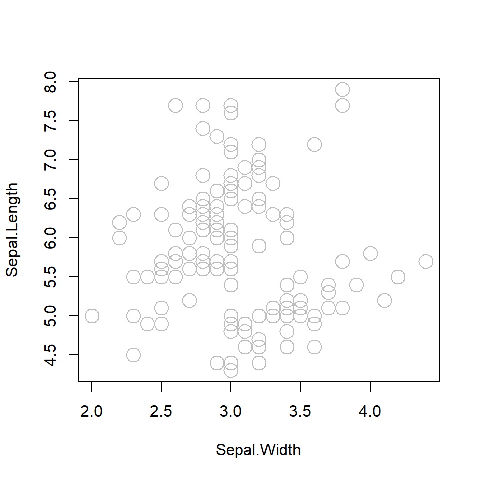
3.2.2 Symbol size
cex argument. cex = 1 is the default value. cex = 2 is as twice large as default value.
plot(Sepal.Length ~ Sepal.Width, data = iris,
pch = 19, cex = 2)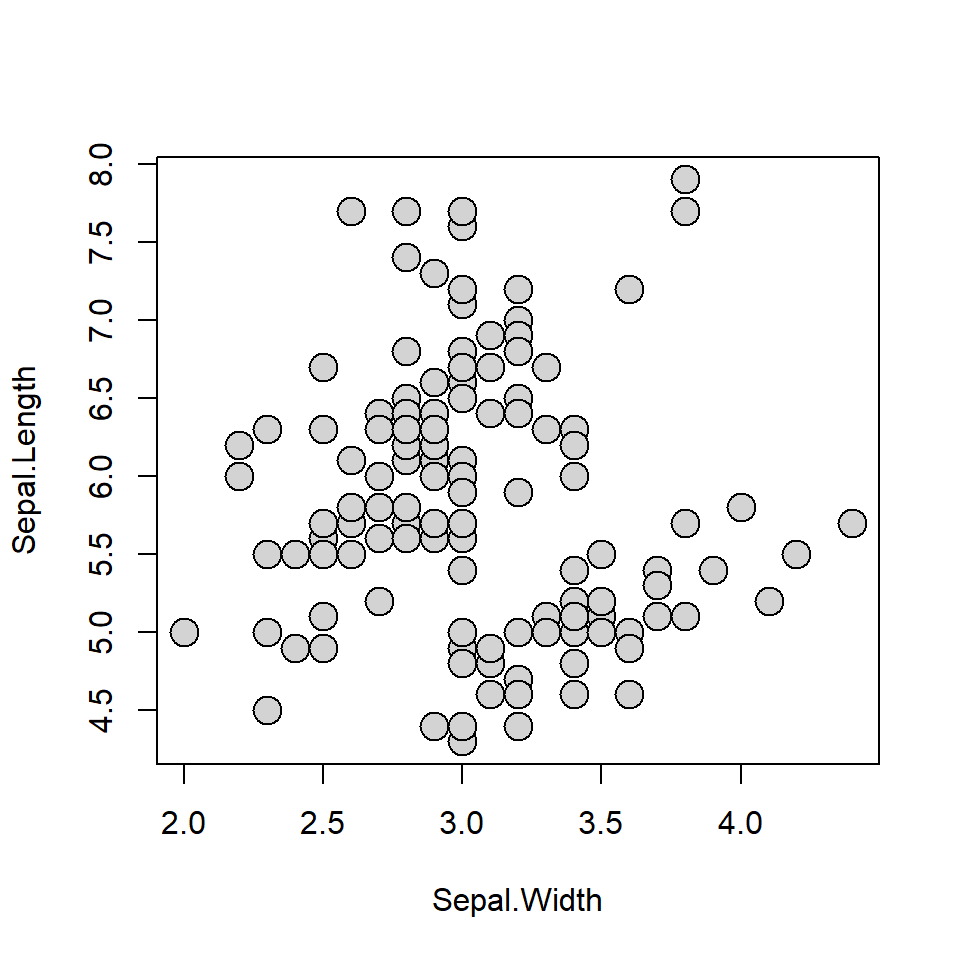
3.2.3 Symbol color (border)
col argument (quote "color name" when specifying). Google r color name for color options.
plot(Sepal.Length ~ Sepal.Width, data = iris,
pch = 21, cex = 2, col = "gray")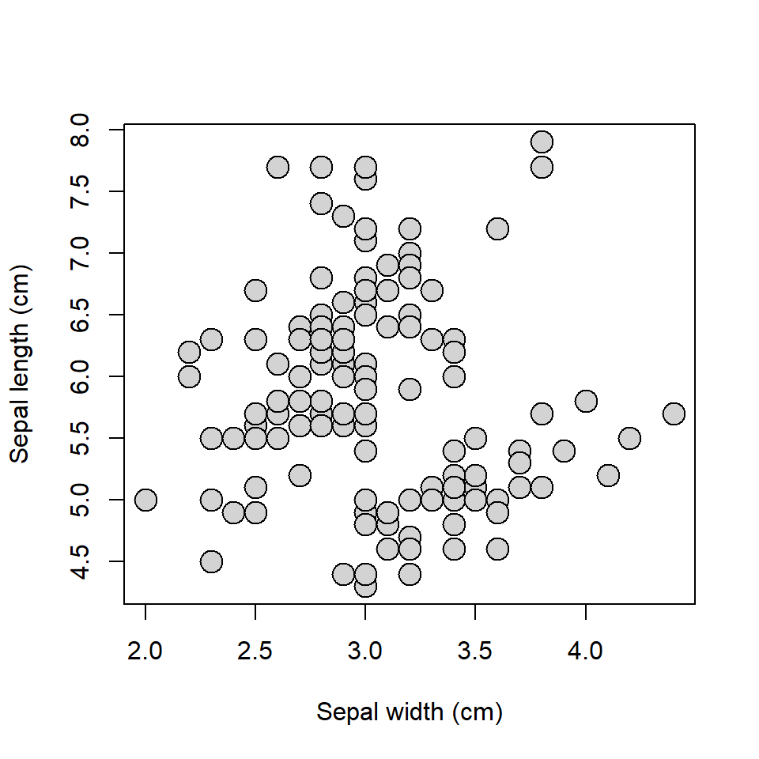
3.2.4 Symbol color (fill)
bg argument (quote "color name" when specifying). Available for a subset of symbol options (some symbols have pre-defined filled color).
plot(Sepal.Length ~ Sepal.Width, data = iris,
pch = 21, cex = 2, bg = "lightgray")3.2.5 Label
ylab or xlab arguments. Provide "quoted text".
plot(Sepal.Length ~ Sepal.Width, data = iris,
pch = 21, cex = 2, bg = "lightgray",
xlab = "Sepal width (cm)", ylab = "Sepal length (cm)")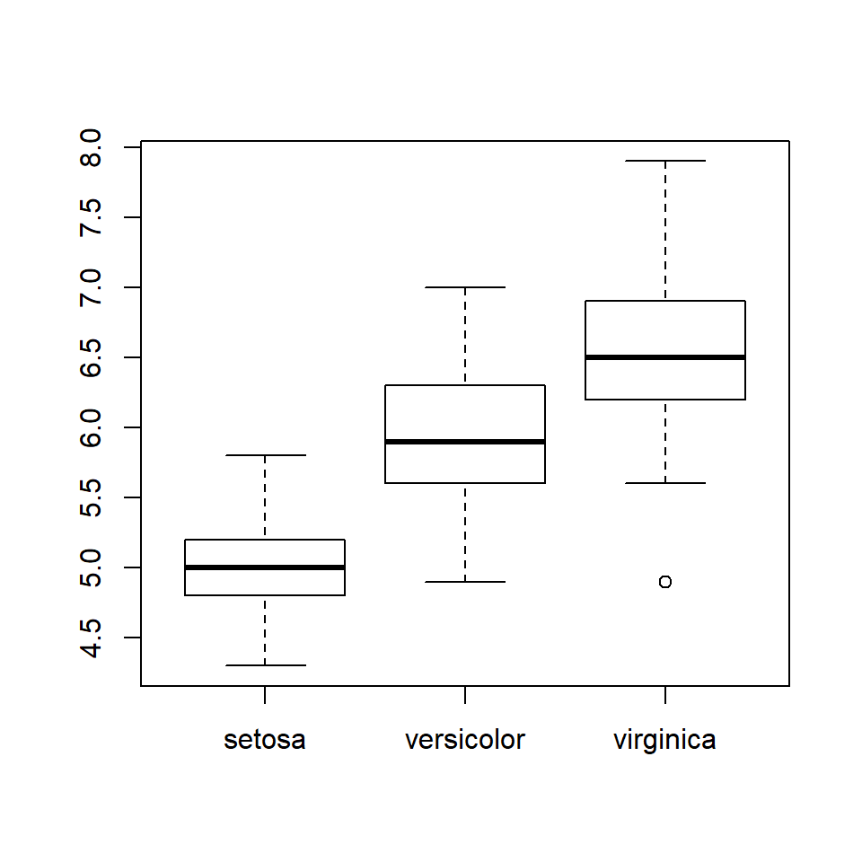
3.2.6 Axis
Delete axes with axes = F and re-draw with box() and axis() functions.
plot(Sepal.Length ~ Sepal.Width, data = iris,
pch = 21, cex = 2, bg = "lightgray",
xlab = "Sepal width (cm)", ylab = "Sepal length (cm)",
axes = F)
box(bty = "l") # L-shaped border lines
axis(1) # 1: draw x-axis
axis(2, las = 2) # 2: draw y-axis, las = 2: make axis lables horizontal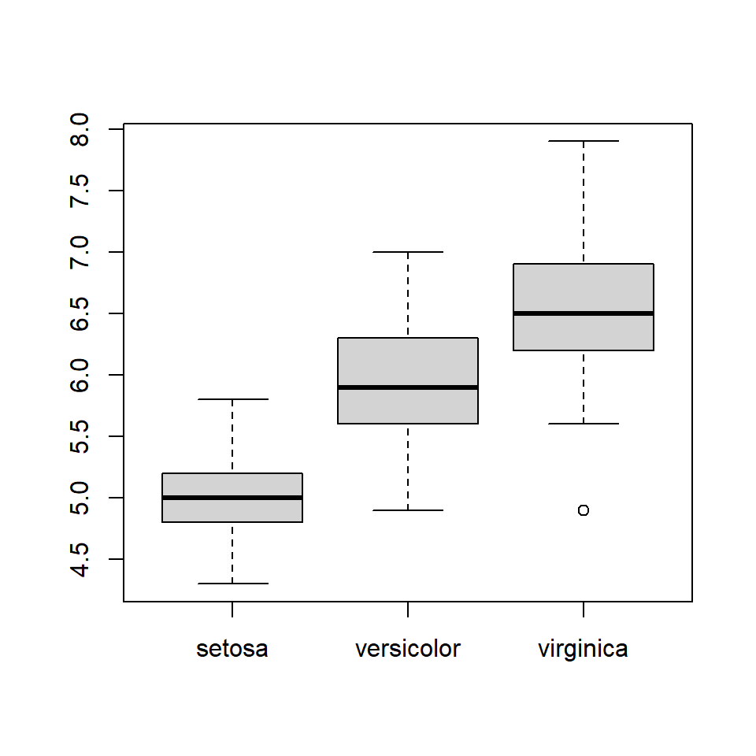
3.3 boxplot()
boxplot() is used when the x-axis is factor-type data (by default, plot() will produce a boxplot when x-axis is a factor variable). In the iris dataset, the column Species is a factor variable. Compare Sepal.Length among species using boxplot().
boxplot(Sepal.Length ~ Species, data = iris)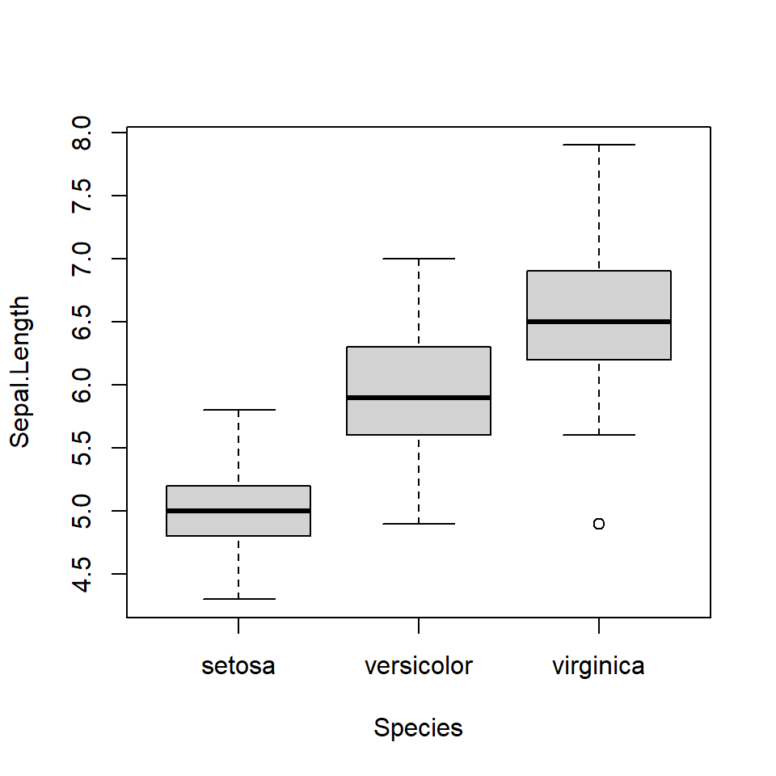
You can customize as in plot(), but slighlty different.
3.3.1 Box color
col argument.
boxplot(Sepal.Length ~ Species, data = iris,
col = "lightgray")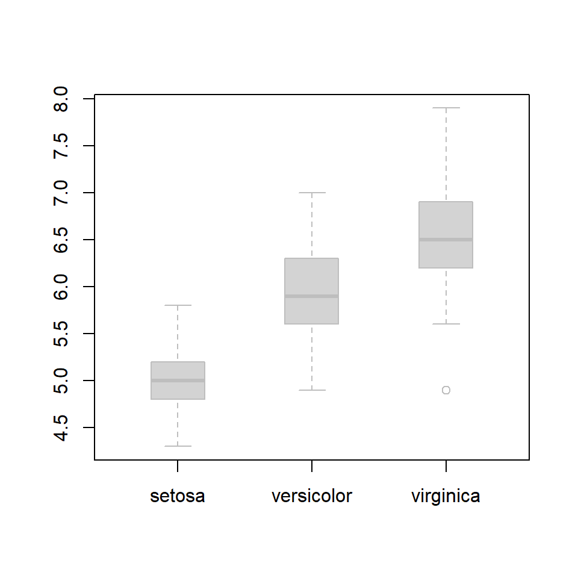
3.3.2 Border color
border argument.
boxplot(Sepal.Length ~ Species, data = iris,
col = "lightgray", border = "grey48")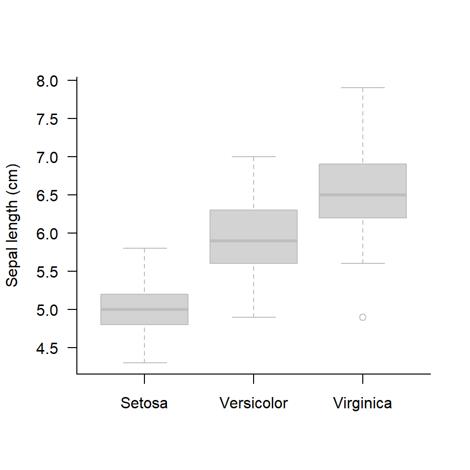
3.3.3 Box width
boxwex argument.
boxplot(Sepal.Length ~ Species, data = iris,
col = "lightgray", border = "grey48",
boxwex = 0.4 )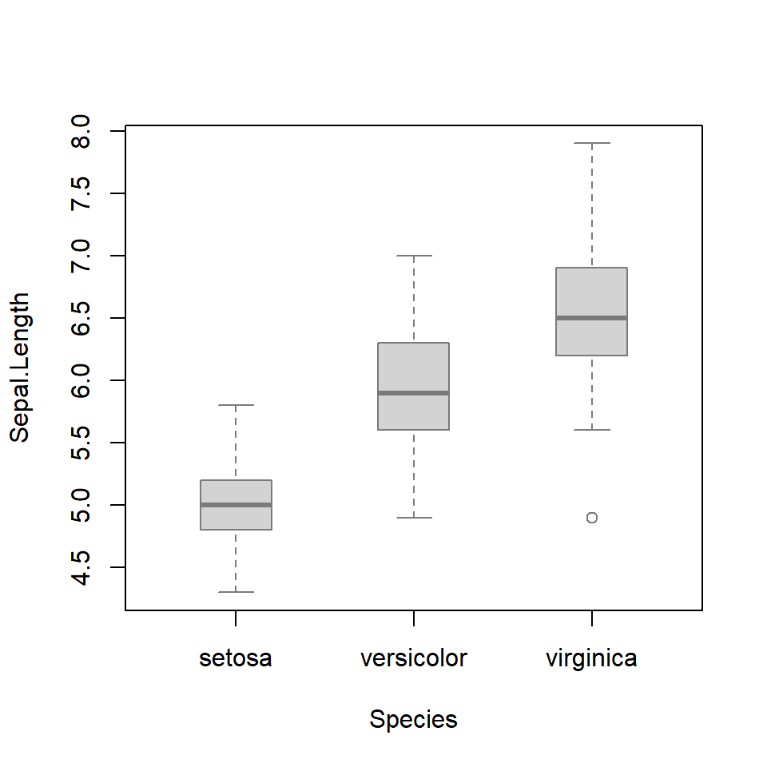
3.3.4 Axis
Delete axes with axes = F and re-draw with box() and axis() functions.
boxplot(Sepal.Length ~ Species, data = iris,
col = "lightgray", border = "grey48",
boxwex = 0.4, ylab = "Sepal length (cm)",
axes = F)
box(bty = "l")
axis(1, at = c(1, 2, 3), labels = c("Setosa", "Versicolor", "Virginica") )
axis(2, las = 2)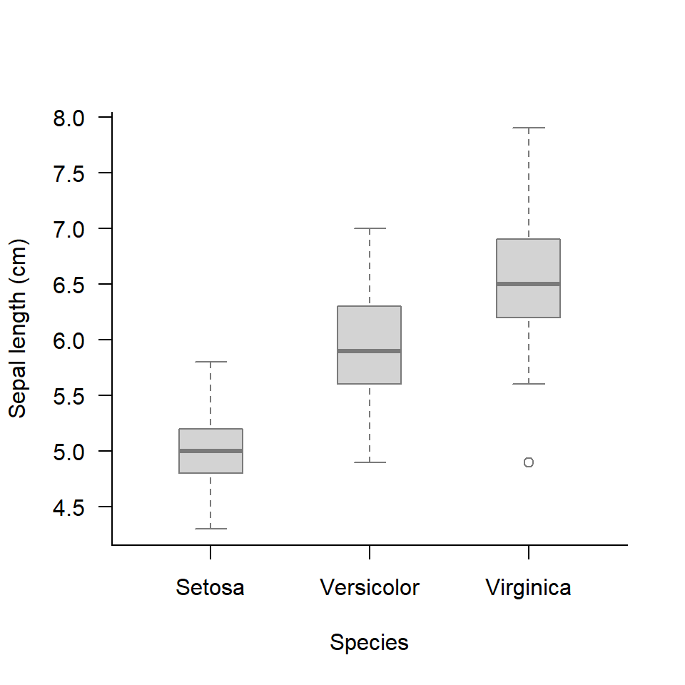
3.4 Exercise
Download a template (R script file).
3.4.1 plot() function
- Plot the relationship between
Sepal.WidthandPetal.Width - Turn symbol color (border) into red.
- Turn symbol color (fill) into red (set
pch = 21). - Make symbol size larger.
- Make L-shaped plot border (delete border lines on upper and right sides)
3.4.2 boxplot() function
- Plot the relationship between
Petal.WidthandSpecies. - Turn box color (border) into
blue. - Make box width narrower.